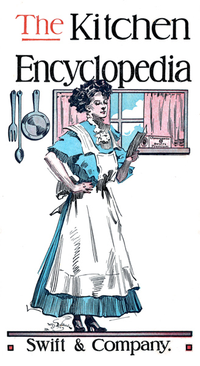
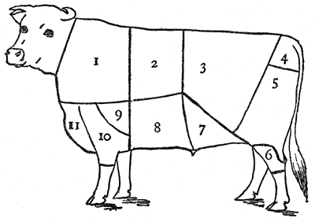
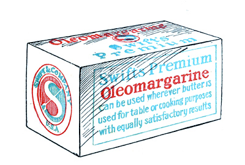

Title: The kitchen encyclopedia
Creator: Swift & Company
Release date: September 17, 2010 [eBook #33748]
Most recently updated: January 29, 2021
Language: English
Credits: E-text prepared by Tor Martin Kristiansen, Fox in the Stars, S. D., and the Project Gutenberg Online Distributed Proofreading Team (http://www.pgdp.net)
E-text prepared by Tor Martin Kristiansen, Fox in the Stars, S. D.,
and the Project Gutenberg Online Distributed Proofreading Team
(http://www.pgdp.net)

You will find many helpful
suggestions in this book; all
of them are tried and practical
Twelfth Edition
Swift & Company, U. S. A.
Copyright, 1911, by Swift & Company
Swift's Premium Oleomargarine is a sweet, pure, clean, food product made from rich cream and edible fats. It contains every element of nutrition found in the best creamery butter.
The process of manufacture is primitive in its simplicity, but modern in its cleanliness and purity.
The butter fat in Swift's Premium Oleomargarine is microscopically and chemically the same as in the best butter; the only difference is in the way it is secured from the cow.
Butter fat in butter is all obtained by churning. In Swift's Premium Oleomargarine from ⅓ to ½ is obtained in that way, the remainder is pressed from the choicest fat of Government inspected animals. This pressed fat is called "Oleo" hence the name "Oleomargarine."
Rich cream, fancy creamery butter, 'oleo' 'neutral,' vegetable oil and dairy salt are the only ingredients of Premium Oleomargarine. 'Neutral' is pressed from leaf fat. It is odorless and tasteless.
There is no coloring matter added to Premium Oleomargarine, yet it is a tempting rich cream color.
Each week day during the year 1911 there has been an average of more than 400 visitors through our Chicago Oleomargarine Factory.
In addition to this daily inspection by the visiting public our factories are in complete charge of Government Inspectors.
These men test the quality and character of materials, they see that the contents of every tierce of 'oleo' and 'neutral' received from the Refinery is from animals that have passed the rigid Government inspection. They see that everything about the factories is kept absolutely clean and sanitary.
Read what a Government expert said about Oleomargarine:
The late Prof. W. O. Atwater, director of the United States Government Agricultural Experiment Station at Washington:
"It contains essentially the same ingredients as natural butter from cow's milk. It is perfectly wholesome and healthy and has a high nutritious value."
Order a carton of Swift's Premium Oleomargarine today to try it. You will find that it is a delicious, wholesome food product that you can use in your home and effect a great saving, still maintaining your standard of good living.
We particularly invite you to visit our factories and see for yourself the cleanliness surrounding this interesting industry.
You can make exactly as good cakes, pies, cookies, and candies by substituting for the butter named in your recipes ¾ the quantity of Swift's Premium Oleomargarine. On this and the following pages are a few recipes in which this substitution has been made. Try them. You will find them good and more economical than when made with butter.
You may have some favorite recipes that are too expensive on account of the large amount of butter required. You can reduce their cost by using Swift's Premium Oleomargarine.
Cream the oleomargarine and sugar. Add the milk, with which the vanilla has been mixed. Sift the baking-powder with the flour and add gradually. Add the whites, well beaten, last.
Cream the oleomargarine and sugar. Add the egg-yolks, well beaten, then the milk. Sift the baking-powder and spices with the flour and add gradually. The raisins should be seeded and dredged with flour, and the figs should be cut in small pieces and dredged with flour and added to the batter the last thing. Put in the pan alternate layers of each part and bake in a loaf.
Cream the oleomargarine and sugar. Add the eggs, whites and yolks beaten together. Dissolve the soda in the sour milk. Add this and then the flour. Roll out thin. Just before cutting out the cookies sift granulated sugar on top and roll it in slightly, then cut out cookies with cookie-cutter and bake in a moderate oven.
Put all together in an oatmeal cooker and cook over hot water until thick. Take from the fire and cool a little. Line a deep pie-plate with crust, pour in the lemon mixture, and bake in a moderate oven until the crust is done. Remove from the oven and have ready the whites of the three eggs, beaten up stiff, with three level tablespoonfuls of powdered sugar; spread this meringue smoothly over the pie, return to the oven, and bake a light brown.
Sift together meal, flour, baking-powder, and sugar. To this add in order the milk, the egg-yolks well beaten, the oleomargarine melted and lastly the well-beaten whites of the eggs. Bake in a hot oven for thirty to thirty-five minutes. This is particularly delicious if just before it is done half a cupful of cream is poured over the top.
Cream oleomargarine and sugar. Add egg-yolks well beaten. Dissolve soda in milk and add next. Mix oats, flour, salt, and cinnamon together well and add. Add the raisins last. Beat well and drop with a spoon on to buttered tins and bake in moderate oven.
Beat the egg white and yolk together and add it to the molasses. Dissolve the soda in the boiling water and add that next. Mix flour, cinnamon, and cloves together and add gradually. Add the butterine melted. Lastly add the raisins. Steam two and a half hours. Serve warm with sauce made of one cupful Swift's Premium Oleomargarine stirred until smooth with one cupful powdered sugar. Add one egg, flavor to taste, and beat until smooth.
Stir together the oleomargarine, milk, and sugar, and cook until it can be picked up when dropped in cold water. Beat until it thickens and add the walnuts slightly salted. Pour in buttered tins and cut in squares.
Put all together and cook, stirring all the time. Cook until brittle when dropped in cold water. Pour into buttered tins and mark for breaking before it is cold.
Mix into a light dough and bake in a flat pan. Quick oven.
Mix with flour enough to roll thin, and bake in a quick oven.
When you wish a fine-grained cake, beat the whites of the eggs to a stiff foam with a Dover egg-beater. If something spongy, such as an angel cake, is desired, use a wire egg-beater, which makes a more air-inflated foam.
Recipes in the older, much-prized cook-books often call for a teacupful of yeast. A teacupful liquid yeast is equal to one cake of compressed yeast.
To remove pecan meats whole, pour boiling water over nuts and let them stand until cold. Then stand the nut on end and crack with a hammer, striking the small end of the nut.
If beef or mutton drippings are used in making a pie-crust, beat them to a cream with a teaspoonful of baking-powder and the juice of half a lemon. This effectually removes all taste.
When a cake sticks to a pan, set it for a few minutes on a cloth wrung out of cold water. It will then come out in good shape.
Heat the blade of the bread-knife before cutting a loaf of fresh bread. This prevents the usual breaking and crumbling of the slices. For cutting hot fudge, first dip the blade of the knife in boiling water.
Nothing is better for pudding molds than jelly tumblers with light tin covers. One can readily tell when the puddings are done without removing the covers.
The juice will not boil out of apple or berry pies if you dot bits of Swift's Premium Oleomargarine near the outer edge.
A little salt in the oven under the baking-tins will prevent burning on the bottom.
There is nothing more effective for removing the burned crust from cake or bread than a flat grater. It works evenly and leaves a smooth surface.
Use a wooden potato masher for stirring butter and sugar together for a cake. It is much quicker than a spoon.
To clean a velvet suit, sponge the spots with pure alcohol. Then suspend the suit on a hanger in the bathroom in such a way that the air can reach all sides of the garment. Turn on the hot water in the tub until the steam fills the room; shut the door and windows; shut off the water, and let the steam do its work for an hour. Then admit the air, but do not touch the garment until it is perfectly dry.
To remove shine from woolen goods, use gentle friction with emery paper. Rub just enough to raise the nap, and then rub it over with a piece of silk.
To mend kid gloves, first buttonhole around the rent not so close as in a buttonhole; then overcast, taking up the thread of the buttonhole on the edge, and then draw together.
To clean men's coat collars, rub with a black stocking saturated with grain alcohol. This will remove the greasy look.
To freshen a thin dress, dissolve two teaspoonfuls of elastic starch in half a cupful of lukewarm water, and with a soft rag dampen on the right side, then with a hot iron press on the wrong side.
To clean grease spots from silk, split a visiting card and rub the soft internal part on the spot on the wrong side of the silk. The spot will disappear without taking the gloss off the silk.
To mend lace curtains, take a small piece of net, dip it and the curtains in hot starch, and apply the patch over the hole. The patch will adhere when dry, and the repair will show much less than if the curtains were mended.
To renew veils, dip them in gum-arabic water, and pin them out to dry as you would a lace curtain. When dry they will look like new.
To freshen black taffeta or satin, sponge with a cupful of strong tea to which a little ammonia has been added. Then press on the wrong side over a damp cloth.
To remove perspiration stains, lay the stain over clean white blotting-paper, and sponge with equal parts of alcohol and ether mixed. Rub dry, then touch lightly with household ammonia. If this leaves a blur, rub well with powdered French chalk on the wrong side. The blotting-paper prevents the fluids from forming a ring around the spot.
To clean linen shades, lay them flat and rub with powdered bath-brick.
To clean piano keys, rub with muslin dipped in alcohol. If the keys are very yellow, use a piece of flannel moistened with cologne water.
To clean books with delicate bindings, which are soiled from handling, rub with chamois skin dipped in powdered pumice stone.
To restore straw matting which has become stained or faded, wash with a strong solution of soda water. Use ordinary baking soda and plenty of Swift's Pride Soap and wash thoroughly, and when dry it will be found that the spots have all disappeared and the matting is all one color.
To clean glass vases, tea-leaves moistened with vinegar will remove the discoloration in glass vases caused by flowers, such as asters.
To clean windows and mirrors, rub them over with thin cold starch, let it dry on, and then wipe off with a soft cloth. This will clean the glass and also give it a brilliant polish.
To remove paint from window glass, use strong hot vinegar.
To remove white spots from furniture, rub first with oil, and then with slightly diluted alcohol.
To remove stains from an enameled saucepan, fill with water, add a little chloride of lime, and boil for a few minutes.
To clean willow-ware, wash with salt water, using a brush.
To polish the globes of gas and electric-light fixtures, wash with water in which a few drops of ammonia have been dissolved.
To clean tiling, wipe with a soft cloth wrung out in soapy water. Never scrub tiling, as scrubbing or the use of much water will eventually loosen the cement and dislodge the sections.
To brighten nickel trimmings on a gas stove, wash with warm water, in which two tablespoonfuls of kerosene have been stirred.
To save dusting, a piece of cheese cloth about two yards long placed on the floor in a freshly swept room will save much of the usual dusting.
A few cents' worth of powdered orris-root put in the wash water will impart a delicate odor to the clothes.
Hot milk is better than hot water to remove fruit stains.
To remove spots from gingham, wet with milk and cover with common salt. Leave for two hours, then rinse thoroughly.
In washing white goods that have become yellow, put a few drops of turpentine into the water, then lay on the grass to dry in the strong sunshine.
To make wash silk look like new, put a tablespoonful of wood alcohol to every quart of water when rinsing and iron while still damp.
When washing, if the article is badly soiled, use a small scrubbing brush and scrub the goods over the washboard.
To set green or blue, mauve or purple, soak the articles for at least ten minutes in alum water before washing them. Use an ounce of alum to a gallon of water. To set brown or tan color, soak for ten minutes in a solution made of a cupful of vinegar in a pail of water. Black goods and black-and-white goods need to be soaked in strong salt water, or to have a cupful of turpentine put into the wash water. Yellows, buffs, and tans are made much brighter by having a cupful of strong, strained coffee put in the rinsing water.
When ironing fine pieces, instead of sprinkling afresh, take a piece of muslin, wring it out in cold water, and lay on the ironing board under the article; press with a warm iron; remove the wet piece and iron.
When making starch for light clothes use Wool Soap in the water. This will give the clothes a glossy appearance and the irons will not stick.
Badly scorched linen may be improved by using the following solution: Boil together well a pint of vinegar, an ounce of Wool Soap, four ounces of fuller's earth, and the juice of two onions. Spread this solution over the scorched spots on the linen and let it dry. Afterward wash the garment and the scorch will disappear.
To keep the clothes-line from twisting, hold the ball of rope in one hand and wind with the other until a twist appears; then change ball to the other hand and the twist will disappear. Keep doing this, changing the rope from one hand to the other until the line is all wound up.
To make ferns grow better, place some thin pieces of raw beef close to the inside of the pot, between the pot and the soil.
Old-fashioned portulaca makes a pretty low-growing green for a fern dish.
To prevent plants from dropping their buds, give extra good drainage and systematic but moderate watering.
An infallible wash for destroying the scaly insects that infest house plants is made as follows: Place half a bar of Swift's Pride Laundry Soap in a deep saucer and pour kerosene around it. Let this stand for about a week until the soap has absorbed the oil. Then make a strong lather of this soap and with it wash the plants. After which spray them with clear water until clean.
To destroy aphis, shower foliage of infested plant on both sides with strong tobacco tea, or, if the plant be small enough, immerse it in this tea.
Insects in the earth of a potted plant may be destroyed by pouring over the soil a glass of water in which a pinch of mustard has been stirred.
If an asparagus fern turns yellow, repot it, giving it a strong loam enriched with one-fifth very old and finely crumbed manure and add a little coarse sand. Give the fern only an hour or two of sunlight each day. Water when it looks dry, but do not let it stand in any water that may have run through into the saucer.
Before putting plants in a wooden window box whitewash the inside of the box. This not only keeps the box from rotting, but prevents insects.
If sprays of growing nasturtiums are broken off in the late summer and placed in a bowl of water they will root and grow all winter.
Much time has been given in the last few years to the study of foods, their necessary proportions, and the manner of cooking them. Educators and scientists have alike agreed that this knowledge ought to be disseminated. On the part of the public also there has been a general awakening in this regard. There has been a wide demand especially from those of limited incomes for information on the purchase and preparation of foods. To meet this demand books have been published and articles have appeared in the various women's papers giving directions for living at all sorts of prices, from the extremely low one, "How to Live on Ten Cents a Day," to the normal one which requires the preparation of appetizing and satisfying dinners at a nominal cost.
In order to accomplish living comfortably at small cost it is evident that one must understand the comparative values of foods, so as to select those which at low prices furnish the necessary nourishment, and, also, be able to cook them in an appetizing way which will conserve the nourishment. Meat is a necessity to most people. Yet much of the present expense in the purchase of meat is needless and unwise. Many pieces of meat of the best quality are sold at low rates because not in shapes to be served as roasting or broiling pieces. These serve well for entrees or made-up dishes. Other pieces which are tough but well flavored can, in the hands of an educated cook, be sent to the table as tender, palatable, sightly and nutritious as the prime cuts. It is to show some methods of preparing these cheaper cuts of meat in an appetizing manner that the following explanation of the processes of cooking and the accompanying recipes are given.
Meat is cooked, first, to aid digestion; secondly, to develop new flavors and render it more palatable.
For cooking there are three essentials besides the material to be cooked—namely, heat, air, and moisture, the latter in the form of water, either found in the food or added to it.
The combined effect of heat and moisture swells and bursts starch grains, hardens albumen, and softens fiber.
Albumen is a substance like the white of an egg. It exists in the juices of meat and contains much nourishment. If allowed to escape, the nourishment is lost and the meat is hard. Therefore we have the first general rule for the cooking of meat, namely:
To retain the albumen, the outside of each piece of meat should be seared or sealed at once before the cooking is continued.
[Page Thirteen] Albumen is coagulated and hardened by intense heat. Therefrom comes the second general rule, namely:
Intense heat hardens and toughens meat, while a soft moist heat softens the fiber.
From these general rules we pass to the specific methods of cooking meat, which are nine in number—broiling, roasting, baking, frying, sauteing, steaming, boiling, stewing, or fricasseeing.
Broiling and roasting are practically the same, the chief difference being in the time employed. Both mean to expose one side of the meat to the fire while the other is exposed to the air. By this method the meat is quickly seared and the nutritive juices retained. Meat cooked in this way is richer and finer in flavor.
Baking means cooking in a pan in the oven of a stove, and in these days of hurry has largely superseded roasting.
Frying is the cooking by immersion in hot fat at a temperature of 350 degrees Fahrenheit. There must be sufficient fat to wholly cover each article. This method is employed for croquettes, oysters, etc., and is less injurious to digestion than sauteing.
Sauteing is cooking in a small quantity of fat, as an omelet or hashed browned potatoes are cooked. This is the least wholesome of all methods of cooking meat, and is often held directly responsible for indigestion.
Steaming is an admirable method of cooking tough meats or hams. Modern housewives use a "cooker," which comes for this purpose, but the old-fashioned perforated steamer over a kettle of boiling water is also good.
Boiling is one of the simplest methods of cooking the cheaper cuts of meat. Properly employed, it consists in plunging the whole piece of meat in a large kettle of rapidly boiling water. The meat should be entirely covered by the water, which should continue to boil rapidly for five minutes after the meat has been immersed in it. The temperature of the water should then be immediately lowered to 160 degrees Fahrenheit. If one has not a cooking thermometer, one has only to remember that water boils at 212 degrees Fahrenheit, and it will easily be seen that 160 degrees is considerably below the boiling point.
Stewing or fricasseeing is really cooking slowly in a sauce after the meat has first been browned in a little hot fat. If the mixture is allowed to boil the meat will be tough and shriveled, but if properly stewed it will be soft and easy to digest. Fricasseeing is the most economical of all methods of cooking meat, as there is very little loss in weight, and what is lost from the meat is found in the sauce.
[Page Fourteen] Braising is a method much used in France, and is a cross between boiling and baking. It is done in a covered pan in the oven. The meat is first browned in a little hot fat and then placed in a pan which is partly filled with stock or water. The pan is covered closely and set in a hot oven. After ten minutes the temperature of the oven is reduced to a very low point, and the meat cooks slowly as the stock in the pan evaporates. This method is the best for inferior pieces which require long, slow cooking. It is an excellent method of cooking veal. Meat which is lacking in flavor can be flavored by adding vegetables or herbs to the stock in the pan.
Different cuts of meat require different methods of cooking to bring about the best results. The following diagram and the accompanying suggestions for proper cuts for certain methods of cooking are those given by a prominent teacher in one of the leading domestic science schools in the United States.
|
 |
|
[Page Sixteen] The object of the following article is to present in simple and convenient form the history of the growth of fireless cooking and its advantages over the ordinary methods, so that those women who have had no experience in the management of fireless cookers may be encouraged to try them, and those adventurous women who experimented with the earlier cookers and met with disappointment may be induced to try again.
Such eminent authorities as Linda Hull Larned, author of a series of cook-books; Margaret J. Mitchell, Instructor of Domestic Science at Drexel, Pa., and formerly Dietitian of Manhattan Institute State Hospital, N. Y.; Mrs. Runyon, manager of the lunchroom in the Boston Chamber of Commerce; and Miss Armstrong, director of the Drexel Institute lunchroom—all advocate the use of fireless cookers, and unite in the assertion that it has invariably been found that a good understanding of their management has resulted in success followed inevitably by enthusiasm.
This twentieth century is the age of progress in many directions, but most of all in Domestic Science. Never before has so much attention been devoted to the home. Journalists are giving columns of space to this topic. Churches are directing their efforts to the betterment of the home. Women's Clubs and charitable organizations have taken up the study of the home. The most important result of all this action and thought is the widespread awakening to the fact that the social and moral standing of the home is directly dependent upon its hygienic and economic condition.
In view of this fact, the National Federation of Women's Clubs has practically covered the United States with their County, State, and National Committees on Housekeeping. They know that bad cooking in the home means unsatisfied stomachs, to gratify whose cravings the saloons are filled; it means anemic children, a physical condition that tends to produce criminals; it means premature funerals. To remedy these evils, churches, journalists, philanthropists, clubs are alike working, and all are working along the same lines—that is, better home furnishings, better fuels, better utensils, more efficient, more economic, and less laborious methods of housekeeping. They have not only sought and introduced new inventions, but they have studied the past and adapted and bettered the old.
Among the adaptations of the old ideas with new and modern improvements is the fireless cooker. Ages ago Norwegian and German peasant women, obliged to be away from the house all day working in the fields, knew the secret of bringing food to the boiling point and then continuing its cooking and keeping it hot by packing it in an improvised box of hay. In the evening when the women returned, weary and worn from their field labor, there was the family dinner all ready to serve.
German club women were the first to see the value of this idea adapted to the needs of the German working class of the present day. These German club women revived the hay boxes and distributed numbers of them among poor families and began an educational campaign on their use. The American manufacturer, ever on the alert for ideas, was quick to perceive the economic and commercial advantages of making such an appliance in an up-to-date manner, and so to-day we have on the market numerous fireless cookers.
[Page Eighteen] The principle of fireless cooking, though it bears the difficult name of recaloration, is simple enough. It is merely the retention of heat through complete insulation, just as we retain cold in the ice-box by complete insulation. In the first case, a material which is a poor conductor of heat is interposed between the kettle of hot food and the surrounding atmosphere to prevent radiation or the escape of heat into the surrounding air. In the second case, a poor conductor of heat is placed between the ice and the warmer surrounding atmosphere to prevent the contact of the atmosphere with the ice and the consequent equalization of temperatures. A vacuum is an excellent non-conductor of heat and is employed in the Thermos bottles advertised for use on automobile trips, but a vacuum is expensive and difficult to obtain, which accounts for the high price of Thermos bottles. The effort has been to find some insulating agent within the means of the average housewife. This has now been done in the metal-lined cookers.
The explanation of the cooking principle is equally simple. Ordinarily we heat food to a certain temperature, say, the boiling point, and then we leave it over the fire for some time, not to get hotter, that would be impossible, but to keep it at the same degree of heat, and to do this we must, on account of radiation into the surrounding atmosphere, keep on supplying heat. In the fireless cooker the heat once generated is conserved, and there is no need to add thereto.
Herein lies the economy in fuel. You have only to burn gas long enough to bring the food to the boiling point, and the fireless cooker does the rest. You can put dinner on to cook, and go to work, to the theatre, to visit a friend, or read, or sew, without giving your meal any further attention till time to serve it. This sounds like a fairy tale, but it is absolutely true.
By the fireless cooker you save nine-tenths of the fuel, and ninety-nine hundredths of your temper, your time, and your labor. You do not become perspiring and cross in a hot kitchen. You do not have scorched pots and kettles to scrape and scour and wash.
Another point in favor of fireless cooking is that it is attended by absolutely no odors. Such vegetables as onions and cabbage can be cooked without any one's suspecting they are in the house.
The economy in using the fireless cooker is not confined solely to a saving in gas and labor. There is also an actual and great economy in food, for there is almost no waste in this method of cooking. Take for example a 5-pound piece of beef from the round. Put this in the kettle of the fireless cooker with a pint of [Page Nineteen] water for each pound of meat. Heat it on the gas range slowly, taking about twenty minutes to bring it to the boiling point. Then, according to directions, place it in the fireless cooker and finish the cooking. When it is done and tender, it will be found that there is only a minute loss in weight; to be exact, 2 ounces for 5 pounds. You bought 5 pounds of meat and have to serve on your table 4 pounds and 14 ounces. You could not make any such showing if you had cooked the meat on a gas or coal range.
Four pounds and 14 ounces, however, is not all that you have to serve. You originally added to your meat 5 pints of water. A little of this evaporated or cooked away in the twenty minutes primary cooking on the stove. All the rest is retained, for there is absolutely no evaporation in a fireless cooker. This water has added to it the nutritive value and flavor acquired from the meat. So besides your 4 pounds and 14 ounces of meat you have over 4 pints of rich soup stock which has cost you absolutely nothing, as it is a by-product of the system of fireless cooking.
"But," objects some one, "the meat cooked in such wise will have lost all its juice and flavor." On the contrary, there is a distinct gain in the matter of flavor in fireless cookery. We absolutely know this to be so, for we have had various cuts of meat, especially the cheaper cuts, cooked in a fireless cooker and the dishes so prepared have been submitted to competent judges; the opinion was unanimous that there was a real difference between the flavor of meats so cooked and that of corresponding cuts cooked after the usual methods, and that the delicacy and richness of flavor lay with those meats cooked by the fireless method.
When one understands the principles of cookery this richness of flavor of meats cooked by the fireless method is not surprising. Every one knows the proverbial deliciousness of French cookery. The special peculiarity of the French cuisine is the long, slow simmering of meats in closely covered earthen pots called casseroles. The principle is essentially that of the fireless cooker, but the casserole not being insulated, the French cook is obliged to keep on supplying a sufficient degree of heat to keep the casserole warm and its contents simmering.
Examples of fireless cooking with which many persons are familiar by experience or hearsay are the foods cooked in primitive ways, whose deliciousness is generally ascribed to the "hunger sauce" that accompanies outdoor cookery. Among such examples are the burying of the saucepan in a hole in the ground, the cooking of food by dropping heated stones into the mixture, and[Page Twenty] the clambake known among the Narragansett Indians. In all these cases we have the principle of the fireless cooker—i. e., closely-covered food slowly cooked at low temperature. Indeed, one fireless cooker is constructed directly on the principle employed in the New England clambake, and every one knows the deliciousness of food so cooked has become proverbial.
By the fireless cooker the cheaper cuts of meat can be cooked so that they are delicious, appetizing, tender. There is here a distinct saving in money, for by the employment of the fireless method of cooking, the cheaper cuts of meat can be made to serve all the purposes of the higher-priced pieces. Further, if the meats are stewed, boiled, or steamed, you also acquire at no cost whatever as many pints of delicious soup stock, less one, as you have pounds of meat.
Let us now recapitulate the advantages of fireless cooking:—
1. Because by its use cheaper meats can be made to answer as well as higher-priced cuts.
2. Because out of a given quantity of raw material you get, after the cooking is done, more actual food than by any other method.
You have only to burn your gas twenty minutes for a 5-pound piece of meat for fireless cooking, whereas by the usual method you would burn the gas two to four hours, according to the way you desired the meat cooked.
Because you have only to watch the meat until it boils. By the usual method you must attend to it all the hours it is on cooking.
For by this method of cooking the housewife knows that the food cannot burn or overcook.
Because it gives the mother time from her kitchen to oversee the development of her children, and to share with them and their father their pleasures and interests.
the fireless cooker is a positive godsend. She can put food into the cooker before going to work, and return to find her meal all ready.
and has to serve dinner at night all the preliminary cooking can be done at noon, and the meal placed in the fireless cooker till evening.
who lives by means of a kitchenette, and must do her cooking in what is at once parlor, bedroom and kitchen, what a blessing is the absence of heat and odors that the fireless cooker assures.
we quote from a bulletin published by the University of Illinois, in which a study is made of the methods of roasting and cooking meats. The authors found that there was no advantage in cooking meat in a very hot oven (385 degrees Fahrenheit), but rather a difficulty to keep it from burning; that in an oven which was about 350 degrees Fahrenheit the meat cooked better; and that in an Aladdin oven, which kept the meat at 212 degrees Fahrenheit, it cooked best of all—that is, it was of more uniform character all through, more juicy and more highly flavored. These findings point to an advantage in fireless cooking, and Miss Mitchell asserts that practical experience bears it out. With regard to meats cooked in water in the cooker, Miss Mitchell asserts that experience has shown that they become well done and are more tender than when boiled, showing that the temperatures necessary to reach that degree of cooking are obtained even in the center of a large piece of meat, without toughening or hardening the outside of the meat, as is done when more intense heat is applied.
The following recipes are for the cheaper cuts of meat exclusively, and employ one or another of the preceding methods. Note that in all the recipes the two general rules for tender and juicy meat are observed. The outside of the meat is first quickly seared over to prevent the escape of the juices, and after the first five minutes the heat is reduced so as not to harden the albumen. Boiled or fricasseed meats should cook slowly. If meat is boiled at a gallop the connective tissue is destroyed, the meat falls from the bones in strings, and is hard and leathery.
For stews, meat en casserole, or in any fashion where water is used in the cooking, select the round (5), either upper or under. For boiling, the clod (9) or the round (5) or the extreme lower piece of (3). For rolled steak, mock fillet, steak à la Flamande, or beefsteak pie, the flank steak (7) is best. For cheap stews use (10). For beef à la mode, in a large family use a thick slice of the round (5), for a small family the clod (9). For soup, use the shin or leg. For beef tea, mince meat, and beef loaf, the neck is best. The chuck (1) is used only for roasting or baking, and is good value only for a large family. (2) and (3) are the standing ribs and carve to the best advantage. The aitch or pin bone (in 3) is a desirable roast for a large family. (3) is the loin, the choicest part of the animal. From it come the fillet or tenderloin, the sirloin, and the porterhouse steaks. (4) is the rump, from which come good steaks for broiling.
(One of the nicest and easiest of the cheap dishes)
Use Flank Steak (7)
Mix together beef, potatoes, salt, and pepper, and stir in egg last. Form into a roll 6 inches long. Roll this in a piece of white paper which has been oiled on both sides. Place in a baking-pan and add the beef extract and the oleomargarine. Bake half an hour, basting twice over the paper.
[Page Twenty-three] To serve beef cannelon, remove the paper, place the roll on the platter, and pour over it
Add onion, bay leaf, salt and pepper to tomatoes. Rub the oleomargarine and flour together and place in inner kettle of oatmeal cooker, set over the fire, add the tomato, and stir until it boils. Then place the kettle over hot water in the lower half of the oatmeal cooker, and cook so for ten minutes, when it is ready to serve.
(Very pretty and palatable)
Use any of the cheaper cuts.
Make the filling first. Put the oleomargarine in upper half of an oatmeal kettle, add onion and peppers, and simmer gently for twenty minutes.
Then add the tomato halves cut into three or four pieces each and cook twenty minutes longer. Then add salt and pepper and set over hot water in lower half of kettle to keep hot till wanted. Now make the
Work all well together. Form into a box whose sides are about an inch thick. Place this box on a piece of oiled paper in the bottom of a baking-pan and bake in a quick oven for thirty minutes, basting twice with melted oleomargarine.
To serve, lift box carefully, and place on platter and pour the filling into the center, and send at once to the table.
Use Clod (9) or Under Round (5)
The day before the beef is to be served rub it all over with the following, well mixed together:—
Then sprinkle the beef with about two tablespoonfuls vinegar and let stand overnight. Next day put in the bottom of the roasting pan:—
Lay the meat on the vegetables in the pan, cover closely, and set in an exceedingly hot oven until the meat has browned a little; then reduce the temperature of the oven, and cook very slowly for four hours, basting frequently.
Serve garnished with the vegetables. Make a brown sauce from the stock left in the pan.
This is a very good way to prepare meat in warm weather, as the spices enable it to be kept well for over a week. It is excellent served cold with
Add the salt and egg-yolk to the horseradish and mix thoroughly; whip the cream stiff, and fold it in carefully and send at once to table.
Use cuts from (1), (8), (9), (11)
Put the trimmings and suet of the beef into a large kettle and fry out the fat.
Remove the cracklings or scraps and into the hot fat put the meat and turn quickly until it is red on all sides.
Cover completely with boiling water and boil rapidly for five minutes, then turn down the gas or remove kettle to back of coal range so that the water cannot possibly boil again, and cook fifteen minutes to each pound of meat.
One hour before it is done add one tablespoonful salt and one-quarter teaspoonful pepper.
When done garnish with watercress, or boiled cabbage, or vegetables.
The liquor in which the meat was boiled can be saved for soup, or made into brown sauce to serve with it.
Left-over boiled beef may be served cold cut in thin slices, or made into croquettes, or into meat and potato roll, or into various warmed-over dishes.
Use a Round Steak (5) 1 inch thick
Cover the bottom of the casserole with a layer of the mixed vegetables.
Put in an iron frying-pan over the fire to heat. When hot, rub over the bottom with a piece of Swift's Premium Oleomargarine. Lay in the pieces of steak and brown quickly on both sides. Remove them from the frying-pan and arrange on the vegetables in the casserole. Cover them with the remaining vegetables. Sprinkle over the celery-seed, salt, and pepper, and then pour the hot stock over all. Cover the dish and bake for one hour in a quick oven.
Steak en Casserole should be sent to the table in the same dish in which it is cooked. The steak should be brown and tender, the vegetables slightly brown, and the stock nearly all absorbed.
Use cuts from Chuck (1) or the Round (5)
Mix meat and onion. Add the dry ingredients next. Mix well, then add the eggs. Pack all down hard in a square bread-pan so the loaf will take the form of the pan.
Bake for two hours in a moderately quick oven, basting every fifteen minutes with hot Swift's Beef Extract or hot stock. When done, set away in the pan until cold.
To serve, turn out on a platter and cut in thin slices and serve with catsup or with cream horseradish sauce. Recipe for the latter is given under "Beef à la Mode."
Use any of the cheaper cuts
Shape the meat into little cakes. Put the oleomargarine in a frying-pan, and when hot lay in the cakes and brown quickly on both sides. Then remove the cakes.
Into the oleomargarine left in the pan put the flour and brown. Then add the stock gradually, stirring all the time so there will be no lumps. When smooth add the seasonings. Then lay in the beef cakes, cover, and cook slowly for five minutes. Serve at once with the sauce poured over them.
Use any of the cheaper cuts
Make the meat into little balls. Put one tablespoon oleomargarine in frying-pan, and in it cook the onion slowly without browning it until the onion is soft. Then add the curry-powder and meat balls, and shake the pan over a quick fire for ten minutes.
Put the second tablespoonful oleomargarine in another frying-pan, and when hot add to it the flour. Stir well, then add the salt, pepper and tomato. Let come to a boil and then pour over the meat balls. Cover and cook slowly for five minutes.
Curry balls are nicest served with boiled rice.
Use any of the cheaper cuts
This meat should be free from fat. Have ready an iron pan very hot. Put the chopped meat in it and set in a very hot oven for fifteen minutes, stirring it once or twice. Then add the oleomargarine, salt and pepper, and serve at once with
Mix corn with milk, salt and pepper. Add the yolks, well beaten. Sift the flour with the baking-powder and add it gradually. Lastly, fold in the well-beaten whites of the eggs. Bake in a quick oven for thirty minutes.
Use the Flank Steak (7) or Round (5)
Put meat in deep pudding-dish and sprinkle over it parsley, onion, salt and pepper.
To the suet add the flour, a pinch of salt, and sufficient ice water to moisten, but not to make wet. Knead a little until it can be rolled out in a crust large enough to cover the top of the pudding-dish.
Pour the boiling stock over the meat. Spread the crust over it and cut a slit in the top. Brush over with milk and bake in a moderate oven one and a quarter hours.
Serve in same dish with a napkin folded around it.
Use inch thick slice from Under Round (5)
Rub the slice of meat with flour. Have ready bacon or pork fat very hot in frying-pan. Lay in the meat and brown quickly on both sides.
Spread the seasonings and vegetables over the bottom of a baking-pan. Lay the browned meat upon them; add the Swift's beef extract; cover, and bake three hours in very slow oven, basting every fifteen minutes.
To serve, lay meat in center of the platter. Place vegetables around it. Make a brown sauce with the liquor left in pan and pour over the vegetables.
Use Bony End Shoulder (10) or Veiny Piece (lower 3)
Roll the meat cubes in one tablespoonful of the flour. Put suet in frying-pan and shake over fire until melted. Remove the crackling, put in the meat cubes and turn till they are slightly browned on all sides. Remove the meat.
Into the fat in the pan stir the second tablespoonful of flour; mix and add gradually the stock, stirring all the while so there will be no lumps. When smooth, return the meat to the pan, add the vegetables and seasonings. Cover the pan, draw to the back of the coal range, or reduce the flame of the gas so that the stew will not boil, and let it simmer for one and one-half hours.
Ten minutes before serving make the
Sift flour, baking-powder, and salt together. Add the milk. Take to fire and drop the mixture by spoonfuls all over the stew. Cover and cook slowly for ten minutes without once removing the cover.
To serve, lift the dumplings carefully and lay around the edge of the platter; place stew in the center, and over it pour the sauce.
| PAGE | |
| Baking-Day Helps, | 7 |
| Beef à la Mode, | 24 |
| Beef Cannelon, | 22 |
| Beef Loaf, | 26 |
| Beefsteak Pie, | 28 |
| Boiled Beef, | 25 |
| Braised Beef, | 28 |
| Brown Beef Stew, | 29 |
| Butter Scotch, | 6 |
| Cookies, | 6 |
| Cornbread, | 4 |
| Corn Pudding, | 27 |
| Cream Horseradish Sauce, | 24 |
| Curry Balls, | 27 |
| Dumplings, | 29 |
| English Walnut Pudding, | 5 |
| Fireless Cooker, The Practical Value and Use of, | 15-21 |
| Ginger Bread, | 6 |
| House-Cleaning Hints, | 9 |
| House-Plant Suggestions, | 11 |
| How to Use the Cheaper Cuts of Meat, | 12-14 |
| Illustration showing Standard Cuts of Beef, | 14 |
| Laundry Helps, | 10 |
| Lemon Pie, | 4 |
| Little Beef Cakes, | 26 |
| Loaf Fig Cake, | 3 |
| Oatmeal Crackers, | 5 |
| Oleomargarine, Swift's Premium, | Foot Notes |
| Oleomargarine, The Truth About, | 2 |
| Penoche, | 5 |
| Renovating Suggestions, | 8 |
| Recipes, | 3-6, 22-29 |
| Smothered Beef with Corn Pudding, | 27 |
| Spanish Minced Beef, | 23 |
| Steak en Casserole, | 25 |
| Sugar Cookies, | 4 |
| Timetables (Baking, Boiling, Frying), | 30 |
| Tomato Sauce, | 23 |
| Truth about Oleomargarine, | 2 |
THE SHIRLEY PRESS
CHICAGO

Both "to-day" and "today" appear in the original text. This has not been changed.
The following corrections have been made to the text: